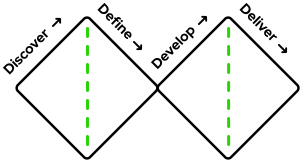
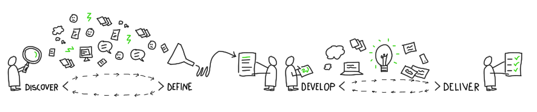

The diamonds represent a recurring switch of focus from divergent thinking to convergent thinking.
Although each stage is well defined, the process is highly iterative and always adaptable depending on
context.

In the discovery phase, user research is in focus. Some suggested methods could be:
- Stakeholder mapping
- Five 5 whys
- Journey mapping
- Interviews
- Obervations
- Quantitative user research (see Google Analytics and Hotjar )
When defining the problem, the goal is to find the essence and prioritize it. Some suggested methods
could be:
- Personas
- Workshops
- Use case
- MoSCoW method (must, should, could, won’t)
- Affinity mapping
- Empathy mapping
We develop concepts with both low- and high fidelity, depending on where in the iterative process the
project is at the time. Some suggested methods could be:
- Storyboards
- Sketches
- Wireframes
- Prototypes
- Affinity mapping
- MVP
In the deliver (and test) phase, we iterate and fine-tune our solutions until we’re sure that they
meet our requirement specification and the concept can be handed over. Some suggested methods could
be:
- High-fidelity prototyping
- User testing, A/B testing (see Teston )
- Design documentation
- Pitch
- Graphics or illustations
Designers gather regularly to share ideas and thoughts, and meet up with content creators weekly to make sure our products and ideas keep a high quality and are in line with our principles.
Through our design language, we are:
- Spacious
- Bright
- Clear
- Contrast
- Soft